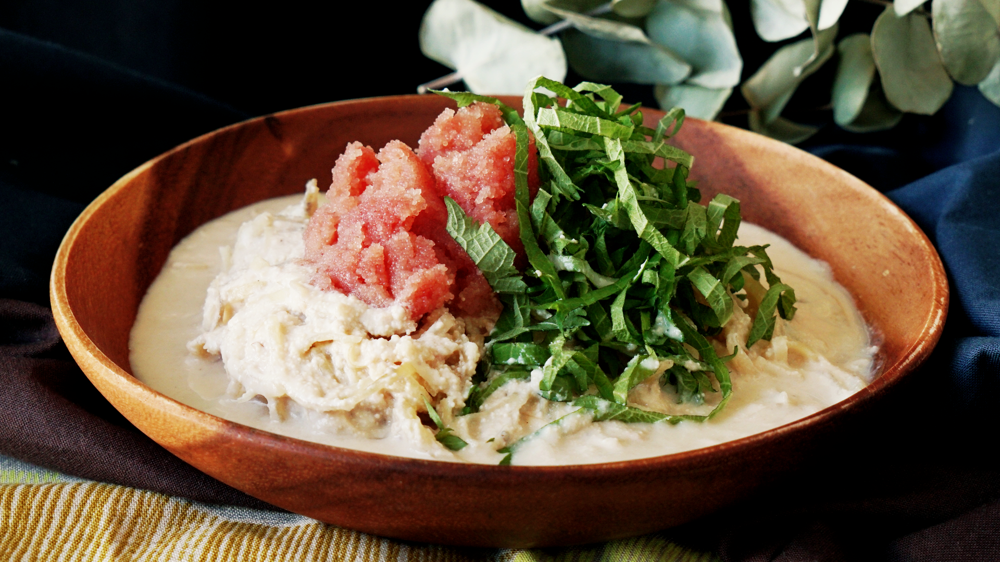

Potato Noodles with Mentaiko

If you're a fan of zucchini noodles, you'll love this creamy potato version.
Ingredients
- If you're a fan of zucchini noodles, you'll love this creamy potato version.
- 2 pouches mentaiko ( pollock roe )
- 20 grams mayonnaise
- Salt
- Pepper
- 3 grams instant chicken bouillon granules
- 150 milliliters milk
- 15 milliliters soy sauce
- Perilla leaves, thinly sliced
Directions
- Cut potatoes with a spiral slicer and place the potato noodles in a bowl of water to remove excess starch.
- Drain well and transfer to a frying pan.
- Add mayonnaise and stir-fry until potatoes are just soft.
- Add in half the mentaiko, milk, soy sauce, chicken bouillon, salt and pepper.
- Heat until the sauce has slightly thickened.
- Transfer to a plate and top with mentaiko and perilla leaves.